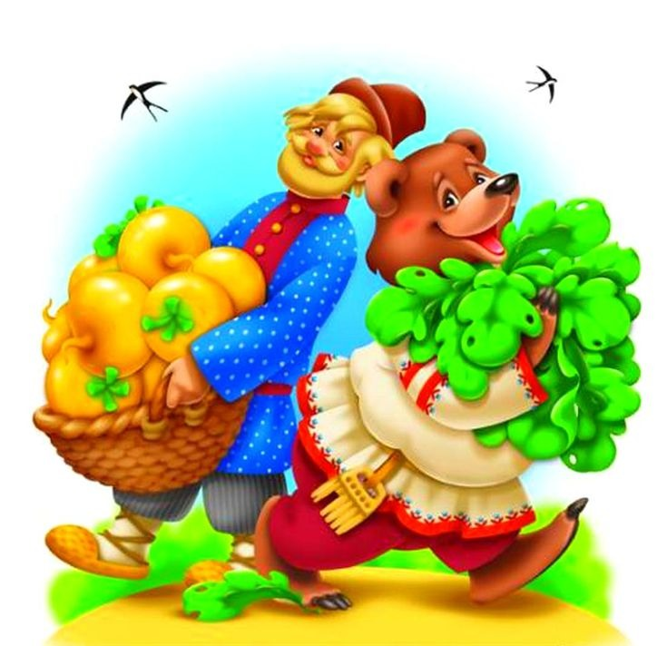
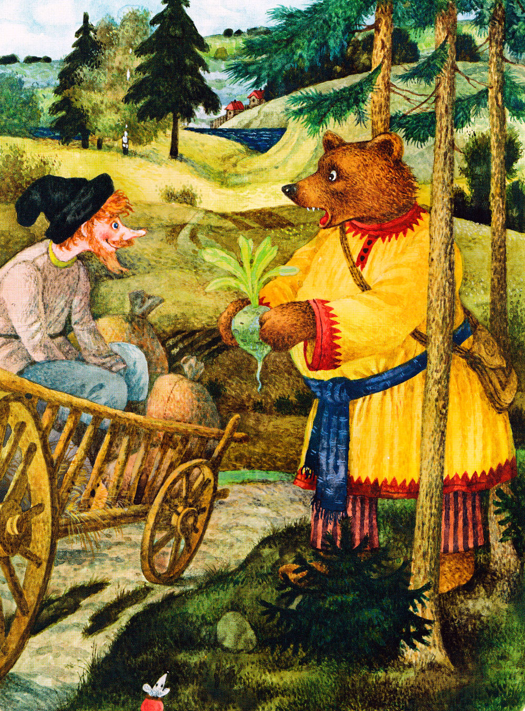
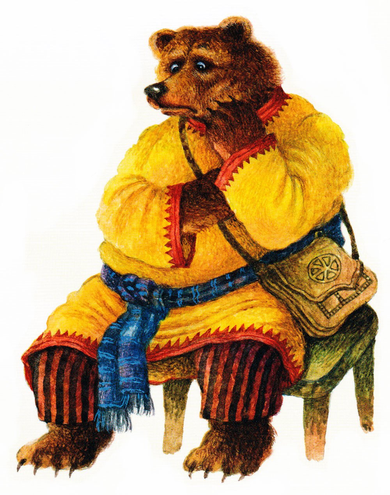

Мужик и медведь

Мужик поехал в лес репу сеять. Пашет там да работает. Пришел к нему медведь:
— Мужик, я тебя сломаю.
— Не ломай меня, медведюшка, лучше давай вместе репу сеять. Я себе возьму хоть корешки, а тебе отдам вершки.
— Быть так,— сказал медведь.— А коли обманешь, так в лес ко мне хоть не езди.
Сказал и ушел в дуброву.
Репа выросла крупная. Мужик приехал осенью копать репу. А медведь из дубровы вылезает:
— Мужик, давай репу делить, мою долю подавай.

— Ладно, медведюшка, давай делить: тебе вершки, мне корешки. Отдал мужик медведю всю ботву. А репу наклал на воз и повез в город продавать.
Навстречу ему медведь:
— Мужик, куда ты едешь?
— Еду, медведюшка, в город корешки продавать.
— Дай-ка попробовать — каков корешок? Мужик дал ему репу. Медведь, как съел:
— А-а! — заревел.— Мужик, обманул ты меня! Твои корешки сла-деньки. Теперь не езжай ко мне в лес по дрова, а то заломаю.
На другой год мужик посеял на том месте рожь. Приехал жать, а уж медведь его дожидается:
— Теперь меня, мужик, не обманешь, давай мою долю. Мужик говорит:
— Быть так. Бери, медведюшка, корешки, а я себе возьму хоть вершки.
Собрали они рожь. Отдал мужик медведю корешки, а рожь наклал на воз и увез домой.
Медведь бился, бился, ничего с корешками сделать не мог.
Рассердился он на мужика, и с тех пор у медведя с мужиком вражда пошла.
